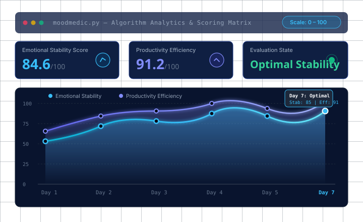
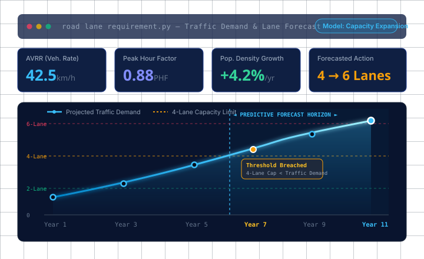

Data Science
Building empirical algorithms, statistical pipelines, and structured evaluations from complex datasets.
Data Science & Machine Learning Enthusiast
Computer Science undergraduate specializing in Health Informatics at VIT Bhopal University, with hands-on experience developing Python-based data science projects involving predictive analytics, scoring algorithms, data visualization, and forecasting.
Pursuing a Bachelor of Technology in Computer Science and Engineering with a specialization in Health Informatics at VIT Bhopal University (2022–2026).
I am focused on the intersection of computational algorithms, empirical data analysis, and predictive modeling. Through my academic coursework in Health Informatics, I explore how structured analytical methodologies can be applied to complex biomedical and systemic challenges.
My hands-on technical work centers on designing Python implementations for real-world scenarios — including psychological assessment scoring systems and growth-based urban infrastructure forecasting. I emphasize methodological rigour, clean algorithm logic, and interpretable data visualizations.
VIT Bhopal University · Bhopal, Madhya Pradesh
B.Tech. Computer Science & Engineering (Health Informatics) · 2022 – 2026 (October)
Building empirical algorithms, statistical pipelines, and structured evaluations from complex datasets.
Investigating quantitative patterns, metrics, and trends to derive structured analytical conclusions.
Formulating predictive models, mathematical estimations, and computational rule frameworks.
Applying informatics, psychological assessment models, and healthcare data processing to improve well-being.
Categorized overview of verified programming competencies, analytical methods, and productivity tools.
Python projects featuring scoring algorithms, multi-parameter forecasting, and analytical visualizations.

Emotional Wellness & Productivity Assessment
A Python-based analytical self-assessment tool designed to evaluate daily mood dynamics and personal productivity efficiency through structured user-reported responses and intensity metrics.

Urban Capacity & Traffic Demand Modeling
A Python-based predictive model engineered to forecast future road lane requirements by correlating population growth rates, population density, Average Vehicle Run Rate (AVRR), and Peak Hour Factor (PHF).
Chronological academic qualifications and institutional milestones.
VIT Bhopal University, Bhopal, Madhya Pradesh
P & B School, Rajkot, Gujarat
Saint Mary's School, Rajkot, Gujarat
Documented leadership positions, competition distinctions, and organizational contributions.
Team Garvit, VIT Bhopal
Team Garvit, VIT Bhopal
Gujarati Club, VIT Bhopal
Interested in data science, analytics, machine learning, or healthcare technology? Reach out via direct email or connect through LinkedIn and GitHub.
💡 Selecting an option formats a pre-filled message directly in your default email client.